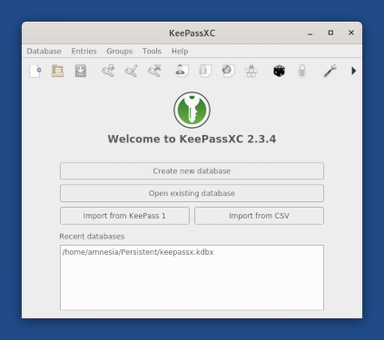
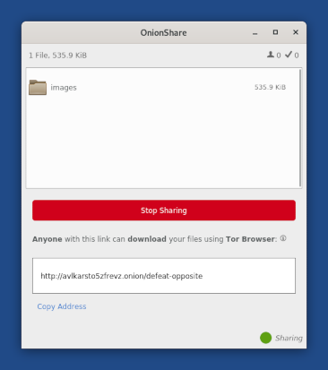
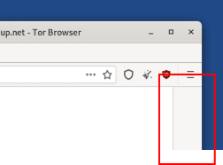
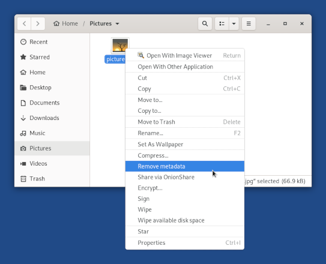
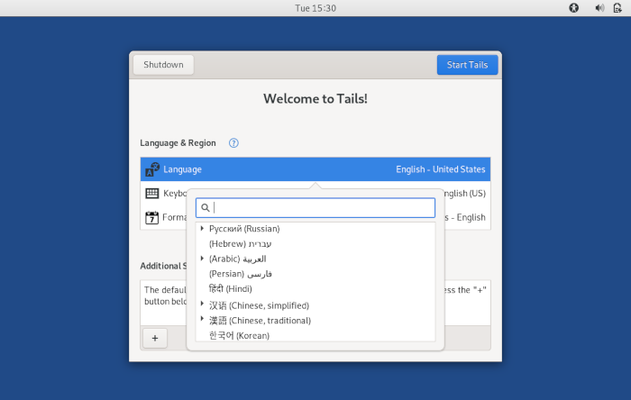
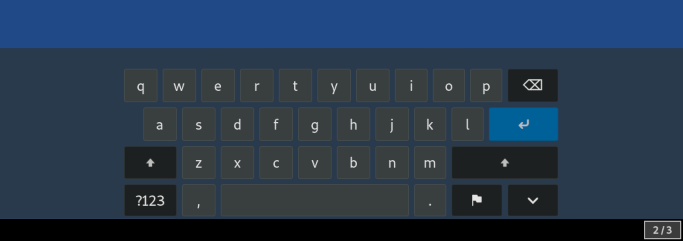

We are especially proud to present you Tails 4.0, the first version of Tails based on Debian 10 (Buster). It brings new versions of most of the software included in Tails and some important usability and performance improvements. Tails 4.0 introduces more changes than any other version since years.
This release also fixes many security issues. You should upgrade as soon as possible.
Changes and upgrades
Major changes to included software
Replace KeePassX with KeePassXC, which is more actively developed.

Update OnionShare from 0.9.2 to 1.3.2, which includes a lot of usability improvements.

Update Tor Browser to 9.0:
A gray border, called letter boxing, is now displayed around the content of web pages when you resize the window of Tor Browser.

Letter boxing prevents websites from identifying your browser based on the size of its window. Letter boxing replaces the yellow warning that was displayed until now when maximizing Tor Browser.
The onion icon has been removed from the top bar.
To switch to a new identity, choose
 ▸
.
▸
.
Update MAT from 0.6.1 to 0.8.0
MAT has no graphical interface of its own anymore.
To clean the metadata of a file:
Open the Files browser and navigate to the file that you want to clean.
Right-click (on Mac, click with two fingers) on the file.
Choose Remove metadata.

Update Linux to 5.3.2. This should also improve the support for newer hardware (graphics, Wi-Fi, etc.).
Update Electrum from 3.2.3 to 3.3.8. Electrum works again in Tails.
Update Enigmail to 2.0.12 and gnupg to 2.2.12, which mitigate OpenPGP certificate flooding.
Upgrade most other software, for example:
Remove Scribus.
You can install Scribus again using the Additional Software feature.
Usability improvements to the Welcome Screen
We improved various aspects of the usability of the Welcome Screen, especially for non-English users:
To make it easier to select a language, we curated the list of proposed languages by removing the ones that had too little translations to be useful. We also clarified how Chinese is listed by having different entries for simplified and traditional Chinese.

We simplified the list of keyboard layouts.
We fixed the Formats setting, which was not being applied.
We prevented additional settings to be applied when clicking on Cancel or Back.
We fixed the opening of help pages in other languages than English, when available.
Performance and usability improvements
Tails 4.0 starts 20% faster.
Tails 4.0 requires about 250 MB less of RAM.
Tails 4.0 is 47 MB smaller to download than Tails 3.16, despite all these changes.
Add support for Thunderbolt devices.
The screen keyboard is easier to use.

Make it possible to show the password of the persistent storage when creating one.
Add support for USB tethering from iPhone.
New documentation pages
How to securely erasing an entire device, including USB sticks and SSDs.
Other changes
Use the default bookmarks from Tor Browser instead of our own default bookmarks. (#15895)
Remove the Home launcher from the desktop. (#16799)
Remove the default accounts in Pidgin. (#16744)
Behobene Probleme
Lesen Sie für mehr Details unser Änderungsprotokoll.
Allow opening persistent volumes from other Tails USB sticks. (#16789)
Fix the delivery of WhisperBack reports. (#17110)
Bekannte Probleme
Für diese Version sind keine bekannt.
Lesen Sie sich die Liste der längerfristig bekannten Probleme durch.
Get Tails 4.0
To upgrade your Tails USB stick and keep your persistent storage
Automatic upgrades are not available to 4.0.
All users must do a manual upgrade.
To install Tails on a new USB stick
Follow our installation instructions:
All the data on this USB stick will be lost.
To download only
If you don't need installation or upgrade instructions, you can directly download Tails 4.0:
Was kommt als Nächstes?
Tails 4.1 is scheduled for December 3.
Werfen Sie einen Blick auf die Roadmap, um zu sehen, was wir als Nächstes vorhaben.
We need your help and there are many ways to contribute to Tails (donating is only one of them). Come talk to us!